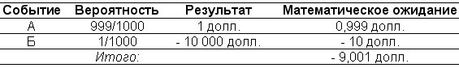
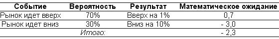
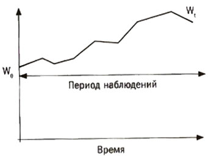

{% include JB/setup %}
{% raw %}
<div>

<span><span id="id10"><div class="title2">
<p class="p">Глава 6</p>
<p class="p">Перекос и асимметрия</p>
</div><div class="cite">
<p class="p1"><em class="calibre">Вводим концепцию «перекоса»: почему термины «бык» и «медведь» имеют ограниченное значение вне зоологии. Озорной ребенок разрушает структуру случайности. Введение в проблему эпистемологической нечеткости. Предпоследний шаг к проблеме индукции.</em></p>
</div><p class="subtitle">Не верьте медиане</p><p class="p1">Писателю и ученому Стивену Гулду (который до недавнего времени был моим образцом для подражания) в возрасте чуть за сорок лет поставили диагноз: смертельная стадия рака желудка. Ему сказали, что <em class="calibre">медиана</em> отведенного срока при его болезни — примерно восемь месяцев. Он подумал, что это похоже на предписание Исайи, данное царю Иезекии, отправиться домой и готовиться к смерти.</p><p class="p1">Возможности современной медицинской диагностики (особенно при заболеваниях такого рода) могут мотивировать людей на проведение интенсивных исследований. Это касается таких плодовитых писателей, как Гулд, которым нужно больше времени, чтобы закончить несколько книг. Дальнейшее изучение его случая показало, что ситуация сильно отличается от первоначального прогноза: <em class="calibre">ожидаемый</em> (то есть средний) срок жизни значительно превышает восемь месяцев. В тот момент он понял, что <em class="calibre">ожидаемый</em> и <em class="calibre">медианный</em> — не одно и то же. Медиана означает, что, грубо говоря, 50 % людей умирает в течение восьми месяцев, а другие 50 % живут дольше этого срока. Причем значительно дольше, обычно проживая жизнь, сравнимую с жизнью обычного человека, в среднем таблицы смертности страховщиков предсказывают 73,4 года или около того.</p><p class="p1">Это асимметрия. Умирают обычно в начале игры, выжившие продолжают жить очень долго. Везде, где проявляется асимметрия, <em class="calibre">средний</em> срок жизни не имеет ничего общего с <em class="calibre">медианным</em>. Это побудило Гулда, таким суровым способом познавшего концепцию перекоса, написать искреннюю статью «Не верьте медиане». Ее мысль состоит в том, что показатель медианы, используемый в медицинских исследованиях, не характеризует распределение вероятности.</p><p class="p1">Я упрощу мысль Гулда, введя далее концепцию <em class="calibre">среднего</em> (его называют также <em class="calibre">математическим ожиданием</em>) с использованием менее болезненного примера, а именно азартных игр. Чтобы объяснить эту тему, я приведу случаи как асимметричных шансов, так и асимметричных исходов. Асимметричность шансов означает, что вероятность событий не равна — у одного вероятность будет выше, чем у другого. Асимметричные исходы означают, что выплаты также не равны.</p><p class="p1">Предположим, я разработал стратегию азартной игры, в которой есть 999 шансов из 1000 получить 1 доллар (событие А) и 1 шанс из 1000 потерять 10 тыс. долларов (событие Б), как показано в табл. 6.1. Мое ожидание — убыток в размере примерно 9 долларов (он получается путем умножения вероятности на соответствующий исход). <em class="calibre">Частота,</em> или <em class="calibre">вероятность,</em> убытка сама по себе совершенно не важна; ее нужно рассматривать исключительно в связи с <em class="calibre">разбросом </em>результатов. Здесь событие А намного вероятнее события Б. Есть шансы, что мы заработаем, делая ставки на событие А, но поступать так — не лучшая идея.</p><p class="p1"><strong class="calibre3"><sup class="a">Табл. 6.1</sup></strong></p><div class="image">

</div><p class="p1">Причина довольно заурядна и проста, она понятна всякому, кто хоть раз заключал пари. Но всю жизнь мне приходилось бороться на финансовых рынках с людьми, которые, похоже, не в состоянии это усвоить. Речь идет не о новичках. Я говорю о людях, получивших дополнительное образование (хотя бы и MBA) и все же не чувствующих разницу.</p><p class="p1">Как они могут упускать главное? Почему они путают вероятность и ожидания, то есть вероятность и вероятность, помноженную на выплату? Во многом потому, что большинство людей учатся на примерах из симметричной среды, таких как подбрасывание монеты, где разницы между результатами не существует. На самом деле так называемая кривая нормального распределения, похоже, нашедшая универсальное применение в жизни общества, полностью симметрична. Но об этом поговорим позже.</p><p class="subtitle">Зоология быка и медведя</p><p class="p1">Пресса нередко оперирует такими словами, как «бычий» и «медвежий» в случае повышения («бычий рынок») или понижения («медвежий рынок») цен на финансовых рынках. А еще мы слышим, как говорят: «Я настроен <em class="calibre">по-бычьи</em> относительно Джонни» или <em class="calibre">«Я по-медвежьи</em> отношусь вон к тому деятелю, Нассиму, тому, что сзади, — как-то непонятен он мне», когда обозначают свое отношение к вероятности человека добиться успеха в жизни. Должен сказать, что «бычий» и «медвежий» — просто слова-пустышки, не имеющие никакого смысла в мире случайности, особенно если в этом мире, как и в нашем, преобладают асимметричные результаты.</p><p class="p1">Когда я работал в нью-йоркском офисе крупного инвестиционного банка, то иногда присутствовал на надоедливых еженедельных «дискуссионных встречах», где собирались наиболее профессиональные трейдеры города. Не скрою, я не был в восторге от этих собраний, и не только потому, что они совпадали по времени с занятиями в тренажерном зале. Хотя в дискуссиях участвовали трейдеры, о которых судят по их поддающимся измерению результатам, по сути, это был форум продавцов (людей, умеющих очаровать своих клиентов) и шоуменов из категории «экономистов» или «стратегов» с Уолл-стрит, делающих заявления и определяющих судьбы рынков, но никогда не рискующих (их успех зависит от риторики, а не от фактов, которые можно проверить непосредственно). Предполагалось, что во время дискуссии участники будут высказывать свое мнение по поводу ситуации в мире. По мне, так эти встречи превратились в чистый интеллектуальный мусор. У каждого была история, теория или мысль, которой он хотел поделиться. Меня возмущали люди, которые, не подготовившись и не сходив в библиотеку, полагали, что могут сообщить что-то оригинальное и глубокомысленное по тому или иному предмету. (Я благодарен коллегам с научным подходом к делу, таким как мой друг Стэн Джонас. Прежде чем высказать собственное мнение, они ночами напролет читают все, что касается их предметной области, чтобы познакомиться с результатами исследователей-предшественников. Вы бы учитывали мнение врача, не знакомого с профессиональной медицинской литературой?)</p><p class="p1">Чтобы уменьшить скуку и облегчить аллергию на самоуверенных вещателей банальностей, я нашел оптимальную стратегию, которая заключалась в том, чтобы как можно больше говорить самому, но при этом совершенно не слушать реплики остальных, стараясь решать в уме какие-нибудь уравнения. Когда я слишком много говорил, это прочищало мне мозги, а в случае удачи меня «не приглашали» (то есть не вынуждали участвовать) в дискуссии на следующей неделе.</p><p class="p1">Однажды на одной из таких встреч меня попросили высказать мнение о фондовом рынке. Я заявил не без помпы, что уверен в небольшом росте цен на следующей неделе, причем с высокой вероятностью. Насколько высокой? «Примерно 70 %». Ясно, что это было сильное утверждение. Но меня кто-то перебил: «Нассим, послушай, ты только что хвастался, что открыл короткую позицию по фьючерсам на индекс S&amp;P 500, причем очень крупную, поставив на снижение рынка. Что тебя заставило передумать?» — «Я не передумал! Я очень сильно верю в свою позицию! [Смех в аудитории.] На самом деле я чувствую сейчас, что нужно продавать еще!» Коллеги в комнате выглядели чрезвычайно смущенными. «Так вы смотрите на рынок по-бычьи или по-медвежьи?» — спросил меня один «стратег». Я ответил, что не понимаю слова «бычий» или «медвежий» вне их чисто зоологического контекста. Точно так же, как в случае с событиями А и Б из предыдущего примера, мое мнение заключалось в том, что рынок, скорее всего, должен был пойти вверх («я смотрю на него по-медвежьи»), но при этом лучше открывать короткие позиции («я смотрю на него по-бычьи»), потому что если падение произойдет, то оно будет очень сильным. Внезапно несколько трейдеров в комнате поняли мою мысль и стали высказывать аналогичные соображения. В общем, на следующую дискуссию меня не пригласили.</p><p class="p1">Давайте предположим, что вы разделяете мою точку зрения относительно движения рынка на следующей неделе: есть 70-процентная вероятность роста цен и 30-процентная вероятность их падения.</p><p class="p1">Однако будем считать, что подняться они могут в среднем на 1 %, а упасть — на 10 %. Что бы вы сделали? Вели бы себя «по-бычьи» или «по-медвежьи»?</p><p class="p1"><strong class="calibre3"><sup class="a">Табл. 6.2</sup></strong></p><div class="image">

</div><p class="p1">Термины «бычий» и «медвежий» используются теми, кто не сталкивается на практике с неопределенностью, — например, телекомментаторами и теми, кто не привык рисковать. Увы, но инвесторы и компании получают доход не в вероятностях, а в долларах. Соответственно, неважно, насколько вероятно событие, учитывать нужно то, какие последствия оно вызовет, если произойдет. Неважно, насколько часто достигается прибыль, смотреть нужно на разброс результатов. Чисто бухгалтерский факт: не считая комментаторов, редко кто приносит домой зарплату, зависящую от того, <em class="calibre">как часто</em> он был прав или ошибался. Все получают прибыль или убыток. К этой категории относятся и «главные стратеги» крупнейших инвестиционных банков, которые не отличаются от шоуменов и которых зрители привыкли видеть по телевизору. Они известны, их речи кажутся разумными, они засыпают вас цифрами, но с функциональной точки зрения их задача — развлекать, чтобы их предсказания имели какую-то ценность, им не хватает проверки в терминах статистики. Они опираются скорее на умение делать презентации, нежели на тщательное тестирование гипотез.</p><p class="empty-line"></p><p class="p1"><strong class="calibre3">Самоуверенный сын</strong></p><p class="p1">Если не брать в расчет необходимость развлекаться на этих пустых «дискуссионных встречах», я воздерживаюсь от рекомендаций насчет рынка, что вызывает напряжение в отношениях с некоторыми друзьями и родственниками. Однажды приятель моего отца (из числа обеспеченных и уверенных в себе) позвонил мне во время своего визита в Нью-Йорк (чтобы четче обозначить свое место в социальной иерархии, в разговоре он упомянул, что прилетел на «Конкорде», и пренебрежительно отозвался об уровне комфорта такого способа путешествия). Ему было интересно, как я оцениваю ситуацию на различных финансовых рынках. У меня действительно не было своего мнения, и тратить усилия на формулировки я не хотел, да и вообще очень слабо интересовался рынками. А джентльмен все продолжал засыпать меня вопросами о состоянии экономики и действиях центральных банков европейских стран. Это были точные вопросы, несомненно, заданные, чтобы сравнить мое мнение с мнением какого-то другого эксперта, управлявшего его счетом в одном из крупных нью-йоркских инвестиционных банков. Я не стал скрывать ни то, что ничем не могу ему помочь, ни то, что не сожалею об этом. Меня не интересуют рынки («да, я трейдер»), я не делаю предсказаний, точка. Я начал объяснять ему некоторые идеи о структуре случайности и возможности проверить сигналы рынка, но ему нужно было более точное утверждение о том, что будет с европейскими облигациями к Рождеству.</p><p class="p1">Он попрощался, было впечатление, что я наступил ему на ногу, это почти разрушило отношения между моим отцом и его богатым близким другом. Этот джентльмен позвонил отцу и заявил ему: «Когда я задаю адвокату юридический вопрос, он отвечает мне вежливо и точно. Когда я обращаюсь к врачу, он высказывает мне свое мнение. Все специалисты относятся ко мне с уважением. Твой высокомерный и самоуверенный двадцатидевятилетний сын строит из себя примадонну и отказывается говорить со мной о том, куда будут двигаться рынки!»</p><p class="empty-line"></p><p class="p1"><strong class="calibre3">Редкие события</strong></p><p class="p1">То, чем я всю жизнь занимаюсь на рынке, лучше всего описать как «перекошенные пари», то есть я пытаюсь заработать на событиях, что происходят редко, однако если происходят, то обеспечивают крупные доходы. Я стараюсь зарабатывать редко, как можно реже, просто потому, что верю: редкие события не оцениваются справедливо, и чем реже они, тем сильнее их недооценивают. Помимо собственного опыта некоторое преимущество мне дает неподвластная интуиции сторона трейдинга (и тот факт, что наш механизм эмоций к ней не приспособлен).</p><p class="p1">Почему все эти события так плохо оцениваются? Благодаря психологическим клише люди, окружавшие меня на протяжении всей карьеры, не размышляли над характеристиками редких событий, а были слишком сосредоточены на том, чтобы запомнить содержание второго раздела газеты <em class="calibre">The Wall Street Journal</em>, которую они читали во время поездки на работу. Или, возможно, они слишком внимательно слушали телевизионных гуру. Или тратили слишком много времени на апгрейд своего карманного компьютера PalmPilot. Даже некоторые опытные ветераны трейдинга, кажется, не понимают, что частота события ничего не значит. Джим Роджерс, легендарный инвестор, сделал следующее заявление:</p><div class="cite">
<p class="p1">«Я не покупаю опционы. Покупка опционов — один из способов закончить жизнь в богадельне. Кто-то провел исследование для Комиссии по ценным бумагам и биржам и выяснил, что 90 % всех опционов убыточны на дату исполнения. Ну я и понял, что если 90 % всех «длинных» позиций по опционам убыточны, это значит, что 90 % всех «коротких» позиций приносят прибыль. Если я хочу использовать опционы на медвежьем рынке, я продаю опционы на покупку».</p>
</div><p class="p1">Ясно, что статистические данные об убыточности 90 % всех позиций по опционам бессмысленны (это <em class="calibre">частота</em>), если не учитывать, <em class="calibre">сколько</em> денег в среднем приносят остальные 10 %. Если в среднем мы получаем на прибыльном опционе в 50 раз больше, тогда я легко могу заявить, что покупка опционов — это способ закончить жизнь во дворце, а не в богадельне. Похоже, господин Джим Роджерс довольно многого добился в жизни для того, кто не понимает разницы между вероятностью и математическим ожиданием (странно, ведь он был партнером Джорджа Сороса, интересного человека, преуспевшего благодаря редким событиям, но о нем позже).</p><p class="p1">Одним из таких редких событий стал крах фондового рынка 1987 года, который сформировал меня как трейдера и предоставил возможность пройти отличную школу. Ниро из главы 1, живущий в небольшом доме, не хочет оказаться на опасной дороге, он избегает риска редких событий — и это самый благоразумный подход. Я гораздо агрессивнее Ниро и иду на шаг впереди; я построил свою карьеру и бизнес так, чтобы зарабатывать на редких событиях. Другими словами, они приносят мне прибыль благодаря асимметричным ставкам, которые я делаю.</p><p class="p1">Во многих областях такая асимметрия не важна. И классической схеме «успех/промах» накопленный счет ничего не значит, важна только частота события. Но вне ее размах играет роль. К сожалению, технические приемы, используемые в экономике, зачастую импортированы из других областей — экономика финансов все еще молодая дисциплина (конечно, она пока не стала наукой). В большинстве других отраслей люди без проблем исключают экстремальные величины из выборки, когда разница в результатах различных исходов незначительна, обычно это касается образования и медицины. Преподаватель, вычисляющий средний балл своих студентов, не принимает в расчет лучший и худший показатели, которые он называет «выбросами», берет среднее от оставшихся, и это вполне разумно. Легкомысленный синоптик делает то же самое с экстремальными температурами — необычный эпизод в состоянии вызвать перекос общего результата (хотя мы увидим, что это может оказаться ошибкой, когда дело касается прогноза будущих свойств ледяных шапок). Так что люди из мира финансов позаимствовали эту технику и игнорируют не очень частые события, не замечая, что их влияние способно обанкротить компанию.</p><p class="p1">Многие ученые из реального мира стали жертвой такой же глупой ошибки, неверно истолковывая статистику. Яркий пример — обсуждение глобального потепления. Его не смогли заметить на ранней стадии, поскольку обычно ученые выбрасывали из выборки пиковые значения температур, считая, что они вряд ли повторятся. Может быть, и правильно не замечать экстремальные величины, когда рассчитываешь среднюю температуру в целях создания графика отпусков. Но этот метод не работает, когда мы изучаем физические свойства климата, особенно если важен кумулятивный эффект. Такие исследователи первоначально игнорировали тот факт, что пиковые значения, хотя и случаются редко, непропорционально усиливают таяние ледяных шапок. Точно так же, как и в финансах, где событие, даже будучи редким, может иметь серьезные последствия, которые нельзя просто игнорировать.</p><p class="subtitle">Почти все выше среднего</p><p class="p1">Джим Роджерс не единственный, кто совершает эту традиционную ошибку, путая среднее и медиану. Справедливости ради надо сказать, что некоторые люди, зарабатывающие размышлениями на жизнь — например, известный философ Роберт Нозик<a href="part0029.html#id42" class="a">[36]</a>, совершают другую версию той же ошибки (Нозик в остальном выдающийся и яркий мыслитель; до своей преждевременной смерти он был, пожалуй, наиболее уважаемым американским философом того поколения). В книге <em class="calibre">The Nature of Rationality</em> («Природа рациональности») он приводит, как это принято у философов, любительские аргументы из области эволюции и пишет следующее: «Поэтому не больше 50 % населения могут быть богаче остальных». Конечно же, богаче остальных могут быть больше чем 50 % населения. Предположим, что у вас есть очень небольшое число крайне бедных людей, а остальные относятся к среднему классу. Среднее будет ниже медианы. Возьмите население в 10 человек, девять из которых имеют доход в 30 тыс. долларов, а один — 1 тыс. долларов. Средний доход окажется равным 27 100 долларам, и у 9 человек из 10 он будет выше среднего.</p><p class="p1"><sup class="a"><strong class="calibre1">Рис. 6.1.</strong> Образец временного ряда</sup></p><div class="image">

</div><p class="p1">На рис. 6.1 показана последовательность точек, начинающаяся с W<sub class="sup">0</sub>, и заканчивающаяся в конце периода наблюдения точкой W<sub class="sup">t</sub>. Это можно считать гипотетическим или реальным результатом торговой стратегии, которую вы предпочитаете, эффективностью работы инвестиционного менеджера, ценой квадратного метра среднего палаццо эпохи Ренессанса во Флоренции, котировками акций фондового рынка Монголии или разницей между монгольским и американским фондовым рынком. Данный пример состоит из заданного числа последовательных наблюдений W<sub class="sup">1</sub> W<sub class="sup">2</sub>, и так далее, упорядоченных так, что события, отмеченные справа, произошли <em class="calibre">позже</em> тех, что слева.</p><p class="p1">Все было бы намного проще, если бы мы точно знали, что живем в детерминистском мире, то есть мире, в котором отсутствует случайность (мир правой колонки табл. 1). Поведение последовательности точек давало бы понятную и предсказуемую информацию. Мы могли бы точно сказать, что произойдет через день, через год и, возможно, через десять лет. Нам даже не понадобился бы статистик, с этим справился бы и второсортный инженер. Ему не нужно было бы иметь современную ученую степень; любой человек, прошедший в XIX веке обучение у Лапласа, смог бы решить уравнения, которые называются <em class="calibre">дифференциальными</em>, или, что то же самое, <em class="calibre">уравнения движения,</em> поскольку мы имеем дело с динамикой тела, чье положение зависит от времени.</p><p class="p1">Если бы мы жили в мире, где случайность четко очерчена, то все было бы просто, учитывая, что создана целая область знаний под названием «эконометрика», или «анализ временных рядов». Вы бы позвали знакомого специалиста по эконометрике (мой опыт общения с ними говорит о том, что они, как правило, вежливо и дружелюбно относятся к практикам). Он запустил бы свою программу, проверил данные и выдал бы вам диагноз: стоит ли доверить денежные средства трейдеру с такими результатами или имеет ли смысл такая торговая стратегия. Вы могли бы даже купить облегченную версию его программы дешевле чем за 999 долларов и запустить ее в очередные дождливые выходные.</p><p class="p1">Однако нет уверенности, что мир, в котором мы живем, четко определен. Мы увидим, что суждения, сделанные по итогам анализа свойств, которые проявились в прошлом, могут случайно оказаться верными. А могут оказаться бессмысленными, невзначай сбить вас с пути и повести в противоположном направлении. Иногда рыночные данные становятся настоящей западней: они выдают себя за нечто противоположное своей природе, просто чтобы вы инвестировали в эту ценную бумагу или не смогли совладать с рисками. Например, валюты, демонстрирующие наибольшую историческую стабильность, наиболее уязвимы к крахам. Это горькое открытие сделали летом 1997 года инвесторы, которых привлекла безопасность фиксированных курсов валют Малайзии, Индонезии и Таиланда (они были привязаны к доллару и продемонстрировали отсутствие волатильности вплоть до самой резкой, внезапной и грубой их девальвации).</p><p class="p1">Мы были бы или слишком небрежными, или слишком строгими, рассматривая информацию о прошлом как предсказание будущего. Будучи скептиком, я отвергаю временные ряды из прошлого в качестве показателей будущих результатов; мне нужно больше, чем данные. Главный аргумент для меня — <em class="calibre">редкое событие</em>, но есть и множество других.</p><p class="p1">На первый взгляд то, что я заявляю здесь, противоречит сказанному ранее, когда я обвинял людей в неспособности учиться у истории. Проблема в том, что мы слишком большое значение придаем недавним событиям, высказываниям типа «это никогда не случалось раньше», а не истории в целом (то, что раньше никогда не происходило в какой-то области, может в ней произойти). Другими словами, история учит нас тому, что вещи, которые никогда не случались раньше, случаются. Это может дать нам больше информации, чем просто временные ряды; чем шире смотришь, тем лучше урок. Другими словами, история учит нас избегать наивных эмпирических заключений, сделанных в результате изучения отдельных исторических фактов.</p><p class="subtitle">Это обманчивое редкое событие</p><p class="p1"><strong class="calibre3">Источник всех ошибок</strong></p><p class="p1">Благодаря своей обманчивой природе редкое событие имеет множество обличай. Первоначально оно проявилось в Мексике, и ученые назвали случившееся «проблемой песо». В 1980-х годах специалисты по эконометрике были сбиты с толку поведением экономических показателей этой страны. Денежная масса, процентные ставки и прочие показатели, казалось, мало связанные с нашей историей, вели себя непредсказуемо, делая неудачными попытки их моделирования. Они эпизодически и без предупреждения переключались между периодами стабильности и короткими выбросами турбулентности.</p><p class="p1">Обобщая, я начал называть редким событием любую ситуацию, в которой была бы верна старая поговорка «В тихом омуте…». Народная мудрость советует опасаться давнего соседа, который кажется вежливым и сдержанным, образцом идеального гражданина, поскольку однажды вы можете увидеть его портрет в общенациональной газете и узнать, что он — безумный, неистовый убийца. До этого момента он не совершил ни одного проступка. Никак нельзя было предположить, что в таком приятном человеке может вдруг проявиться такое патологическое поведение. Редкие события ассоциируются у меня с любой недооценкой рисков в результате слишком узкой интерпретации временных рядов прошлого.</p><p class="p1">Редкие события всегда неожиданны, иначе они бы не происходили. Вот типичный случай. Вы инвестируете в хедж-фонд, демонстрирующий стабильные доходы и отсутствие волатильности, пока однажды вы не получаете письмо со словами «непредвиденное и <em class="calibre">неожиданное </em>событие, считавшееся редким явлением…» (выделено мной). Однако редкие события случаются в точности потому, что они неожиданны. Они обычно вызваны паникой, которая становится результатом ликвидации позиций (инвесторы одновременно бросаются к выходу, сбрасывая все, до чего могут дотянуться, и как можно скорее). Если бы управляющий фондом или трейдер ожидали этого, они и их аналогично мыслящие коллеги не инвестировали бы в этот рынок, и редкое событие не произошло бы.</p><p class="p1">Редкие события влияют не на какую-то определенную ценную бумагу. Они легко могут снизить доходность всего портфеля. Например, многие трейдеры покупают закладные и хеджируют их так, чтобы снизить риск и избежать волатильности, в надежде получить определенную прибыль, превышающую доход по государственным облигациям (который используется как отраслевой ориентир минимального ожидаемого дохода). Они применяют компьютерные программы и активно используют помощь ученых с докторскими степенями в области прикладной математики, астрофизики, физики элементарных частиц, радиофизики, гидродинамики и даже (хотя и нечасто) обращаются к помощи настоящих докторов экономических наук. Такие портфели показывают стабильные результаты в течение длительных периодов времени. Затем внезапно, как бы случайно (я утверждаю, что неслучайно), стоимость портфеля падает на 40 %, хотя вы ожидали и худшем случае 4-процентного падения. Вы звоните управляющему, чтобы выразить свое негодование, а он говорит вам, что это не его вина, просто как-то драматически изменились связи между инструментами (буквально так). Он укажет вам также на то, что похожие фонды столкнулись с такими же проблемами.</p><p class="p1">Вспомните, что некоторые экономисты называют редкие события проблемой песо. Упомянутая проблема песо оказалась неожиданно типичной. С начала 1980-х дела у валюты южного соседа США не пошли лучше. Долгие периоды стабильности приводили толпы банковских валютных трейдеров и операторов хедж-фондов в тихие воды мексиканского песо; они радовались тому, что владели этой валютой, из-за высоких процентных ставок по инструментам, деноминированным в песо. Затем они неожиданно вылетали с рынка, теряя деньги инвесторов, работу и переключаясь на другие профессии. Затем наступал новый период стабильности. Приходили новые валютные трейдеры, не помнившие о плохих временах. Их привлекало мексиканское песо, и история повторялась снова.</p><p class="p1">Интересно, что редкие события случаются на рынках большинства финансовых инструментов с фиксированным доходом. Весной 1998 года в течение двух часов я пытался объяснить управляющему на тот момент крупного хедж-фонда значение проблемы песо. Я далеко зашел в своих попытках донести до него то, что эта концепция распространяется на все формы инвестиций, основанных на наивной интерпретации волатильности прошлых временных рядов. Ответ был такой: «Вы совершенно правы. Мы не трогаем мексиканское песо. Мы инвестируем только в рублевые активы». Он вылетел с рынка несколько месяцев спустя. До того момента российский рубль означал привлекательные процентные ставки, так что приглашение приняли «охотники за доходностью» всех мастей. Он и другие владельцы инвестиций, деноминированных в рублях, потеряли в течение лета 1998 года примерно 98 % средств.</p><p class="p1">В главе 3 мы видели, что стоматологу не нравится волатильность, так как с ней связаны частые отрицательные эмоции. Чем чаще он изучает свои результаты, тем больше отрицательных эмоций испытает из-за большей переменчивости портфеля при наблюдении с более «высоким разрешением». Соответственно инвесторов, в основном по эмоциональным причинам, привлекают стратегии, в рамках которых возможны <em class="calibre">редкие, но значительные</em> изменения. Это называется «прикрыть случайность париком». Психологи недавно выяснили тенденцию: люди чувствительны к наличию или отсутствию определенного стимула, а не к его величине. Это означает, что убыток вначале воспринимается просто как убыток, а его масштаб понимается позднее. То же самое касается прибыли. Игрок предпочтет, чтобы количество убытков было мало, а количество выигрышей — велико, вместо того чтобы оптимизировать общий результат.</p><p class="p1">Мы можем взглянуть на другой аспект проблемы. Предположим, некто участвует в научных исследованиях. День за днем, удалившись от мира, он расчленяет мышей у себя в лаборатории. Год за годом он делает попытку за попыткой, но так и не видит результата, который можно обнародовать. Его вторая половина может потерять терпение при виде <em class="calibre">неудачника,</em> вечно пахнущего мышиной мочой. Но вот — «Эврика!» — однажды он добивается результата. Наблюдатель, глядя на временной ряд его занятий, не увидит абсолютно никакой пользы, хотя каждый день <em class="calibre">вероятностно</em> приближает его к конечному результату.</p><p class="p1">То же касается издателей: они могут выпускать одну книгу за другой, и к их бизнес-модели не будет никаких вопросов, если однажды раз в десять лег они не взорвутся серией супербестселлеров масштаба Гарри Поттера — конечно, при условии, что они делают работу качественно, а у их книг есть вероятность стать бестселлерами. Интересный экономист Артур Де Вани смог применить эти мысли к двум областям — кинобизнесу и своему собственному здоровью и стилю жизни. Он выяснил характерный перекос выручки от проката фильмов и вышел на другой уровень, а именно вывел дикий вид неподдающейся измерению неопределенности, которую мы обсудим в главе 10. Столь же интересно следующее его открытие: от природы наш организм предрасположен к перекошенным физическим нагрузкам (у охотников и собирателей были периоды бездействия, за которыми следовали вспышки интенсивного расходования энергии). В свои шестьдесят пять Артур, говорят, имеет физическую форму человека вдвое моложе его возраста.</p><p class="p1">На рынках есть категория трейдеров, которые <em class="calibre">инвертировали</em> эффект редких событий, волатильность нередко приносит им хорошие новости. Эти трейдеры часто теряют деньги, но в очень небольших количествах, а зарабатывают редко, но много. Я называю их «охотниками за кризисами». И счастлив быть одним из них.</p><p class="empty-line"></p><p class="p1"><strong class="calibre3">Почему редкие события не обнаруживаются статистиками?</strong></p><p class="p1">Для неспециалистов статистика может показаться слишком сложной, но концепция, лежащая в основе современных теорий, настолько проста, что мой французский приятель-математик называет ее ласково кухней. Все базируется на простом замечании: чем больше у вас информации, тем больше вы уверены в результате. А теперь вопрос: насколько вы уверены? Общепринятые статистические методы основаны на постоянном повышении уровня уверенности, нелинейно по сравнению с количеством наблюдений, то есть при n-кратном увеличении размера выборки мы увеличиваем наше знание на квадратный корень из n. Предположим, я вынимаю красные и черные шары из урны. Мой уровень уверенности о соотношении красных и черных шаров после 20 попыток не в два раза выше, чем тот, что был у меня после 10 попыток, он умножается на квадратный корень из 2 (то есть на 1,41).</p><p class="p1">Статистика становится сложной и начинает обманывать нас там, где распределение не является симметричным, как в рассмотренном случае с урной. Если маловероятно найти красный шар в урне, в которой доминируют черные шары, тогда наше знание об <em class="calibre">отсутствии </em>красных шаров будет расти очень медленно — гораздо медленнее, чем ожидаемый квадратный корень из n. С другой стороны, наше знание о <em class="calibre">наличии</em> красных шаров критически улучшится, как только один из них будет найден. Эта асимметрия знания нетривиальна; она центральный элемент этой книги и центральная философская проблема для таких людей, как Юм и Карл Поппер (об этом далее).</p><p class="p1">Чтобы оценить результаты инвестора, нам нужно или разработать хитроумную и неочевидную технику, или ограничить оценки ситуациями, в которых наши суждения не зависят от частоты событий.</p><p class="empty-line"></p><p class="p1"><strong class="calibre3">Озорное дитя заменяет шары</strong></p><p class="p1">Но все может сложиться гораздо хуже. В некоторых случаях, когда доля красных шаров сама имеет случайное распределение, мы никогда не узнаем структуру содержимого урны. Это называется «проблемой стационарности». Представьте урну, у которой нет дна. Некий озорной ребенок без моего ведома добавляет в нее шары того или иного цвета по мере того, как я их оттуда вынимаю. Теперь мои выводы вовсе ничего не значат. Я могу предположить, что красные шары составляют 50 % содержимого урны, а озорник, услышав это, потихоньку заменит все красные шары на черные. Это делает довольно шаткой большую часть наших знаний, полученных статистически.</p><p class="p1">Тот же самый эффект проявляется на рынках. Мы принимаем историю за простую равномерную выборку и верим, что наблюдение этой выборки значительно увеличит наши знания о будущем. А что, если проказливый ребенок поменяет состав урны? Иными словами, что, если все изменится?</p><p class="p1">Я изучаю и практикую эконометрику больше чем полжизни (с девятнадцати лет), как в университетской аудитории, так и в офисе, будучи трейдером на рынке производных инструментов. Эконометрика как наука представляет собой приложение статистики к выборкам, сделанным в различные периоды времени, которые мы называем временными рядами. Она основана на изучении временных рядов экономических показателей, статистических данных и т. д. Вначале то, что я знал, было близко к нулю (то есть меньше, чем сегодня), и мне было интересно, неужели временные ряды, отражающие действия уже умерших или ушедших на пенсию людей, имеют значение для предсказания будущего. Специалисты по эконометрике, знавшие о предмете много больше, чем я, таких вопросов не задавали; они намекали на то, что я интересуюсь глупостями. Один выдающийся эконометрик, Мохаммад Хашем Песаран, ответил на подобный вопрос рекомендацией «заниматься эконометрикой больше и лучше». Теперь я убежден, что большая часть эконометрики бесполезна — многое из того, что знают финансовые статистики, знать не стоит. Если суммировать нули хотя бы и миллиард раз, сумма останется нулем; точно так же накопление исследований и увеличение их сложности не даст результатов, если под этими исследованиями нет твердых оснований. Изучение европейских рынков 1990-х годов, конечно, сильно поможет историкам, но какое отношение это может иметь к нам сейчас, когда структура институтов и рынков изменилась столь сильно?</p><p class="p1">Заметьте, что экономист Роберт Лукас<a href="part0029.html#id41" class="a">[37]</a> произвел фурор в эконометрике, заявив, что если бы люди были рациональными, то их рациональность позволила бы им выявить в прошлом предсказуемые модели и адаптироваться, поэтому информация о прошлом стала бы совершенно бесполезной для предсказания будущего (этот аргумент, выраженный в математической форме, принес ему Нобелевскую премию). Мы — люди и действуем в соответствии со своими знаниями, которые есть сумма данных о прошлом. Я могу объяснить это путем следующей аналогии. Если рациональные трейдеры обнаруживают модель, в соответствии с которой акции растут по понедельникам, эта модель перестанет существовать сразу после ее обнаружения благодаря людям, которые будут покупать по пятницам в ожидании «эффекта понедельника». Нет смысла искать модели, которые доступны всем людям, имеющим брокерский счет. Однажды обнаруженные, эти модели будут ликвидировать сами себя.</p><p class="p1">Как правило, так называемая критика Лукаса не поддерживается учеными. Есть устойчивая вера в то, что научные успехи промышленной революции распространяются на социальные науки (она особенно поддерживается таким движением, как марксизм). Псевдонаука движется когортой нудных идеалистов, пытающихся скроить удобное им общество, воплощением которого является центральное планирование. Экономика была самым вероятным кандидатом на использование такой науки. Можно было замаскировать шарлатанство горой уравнений, и никто не мог разоблачить вас, поскольку здесь не существует такого явления, как контролируемый эксперимент. Сейчас дух этих методов, которые его противники (такие как я) называют сциентизмом, распространился за пределы марксизма в область финансов, поскольку вместе с десятками псевдоученых многие технические специалисты полагают, что их математических знаний хватит для понимания рынков. Появилась практика финансового инжиниринга. Люди, применяющие эти методы, измеряют риски, используя прошлое как средство для изучения будущего. Здесь мы только скажем, что сама возможность нестационарности распределения делает всю концепцию похожей на дорогую (возможно, <em class="calibre">очень дорогую</em>) ошибку. Это приводит нас к фундаментальному вопросу — проблеме индукции, ее мы и рассмотрим в следующей главе.</p></span></span>
</div>

{% endraw %}

